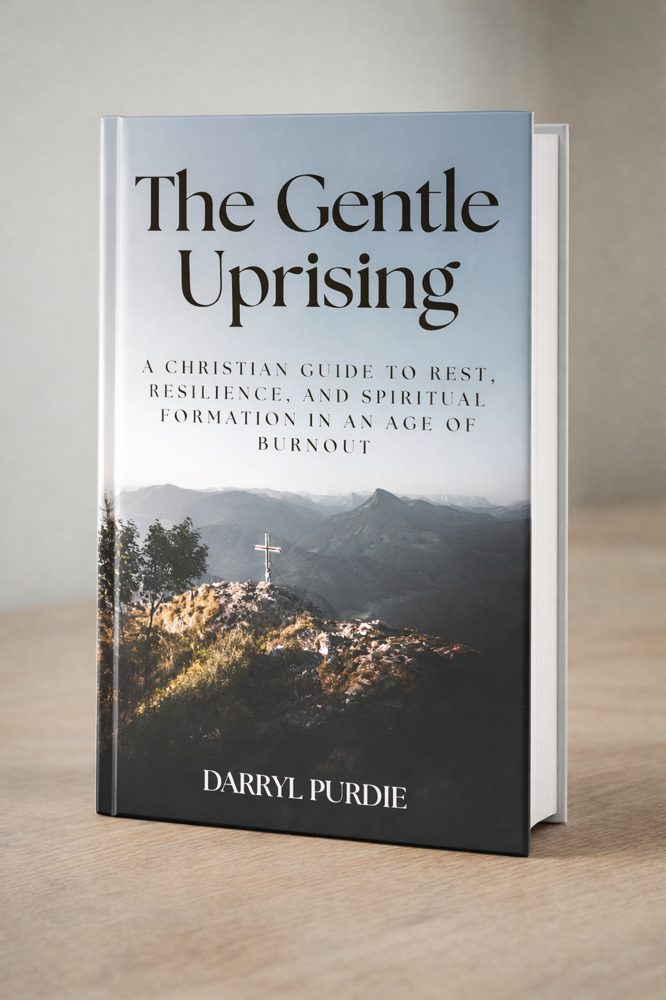
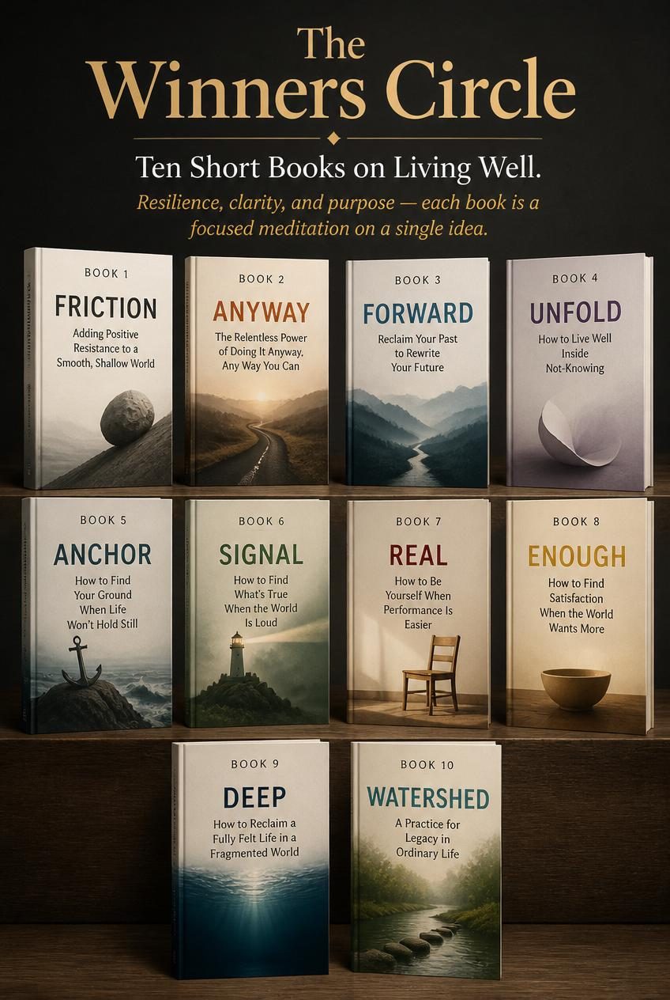
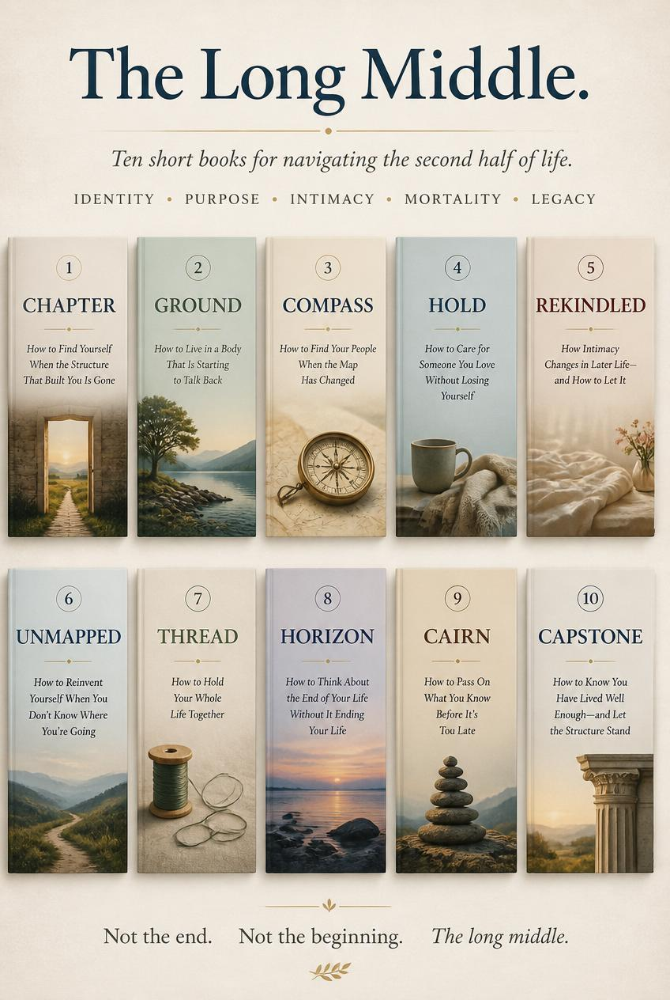
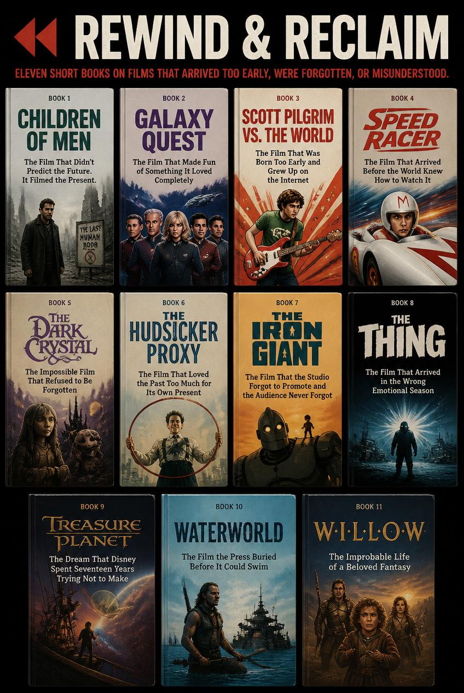

Booktrawler Publishing
Books about grief, faith, rest, and the slow work of grace.
Scroll
Books about grief, faith, rest, and the slow work of grace.
Books about grief, faith, rest, and the slow work of grace — plus a series of 10 short reads for living well.

Reverend Nathaniel Saint confesses his doubt from the pulpit. A stranger carrying his wife's heart appears in his back pew. A small town calls them miraculous. A story about what happens when grief meets grace — and the broken become the miracle.
Explore the Book →
In 1805, a preacher’s son joins HMS Jeopardy and uncovers a traitor in the surgeon’s cabin. As Nelson’s fleet sails toward the battle that changed the world, Thomas Rivington must stop a saboteur from within — without arresting the man who holds the ship’s secrets.
Explore the Book →
The optimization culture is producing hollow achievement and dysregulated souls. This book offers a different path: rooted, embodied, communal, and patient. Trade optimization for transformation — with science, Scripture, and practices you can begin today.
Explore the Book →
Resilience, clarity, and purpose — each book is a focused meditation on a single idea. From finding friction to building a life of generativity. All free PDF downloads.
Explore the Series →
Identity, purpose, intimacy, mortality, legacy — ten minibooks for navigating life after the scaffolding comes down. All free PDF downloads.
Explore the Series →
Films that arrived too early, were misunderstood, or buried by the press. Each book explores why the film matters now more than it did then. All free PDF downloads.
Explore the Series →tom/rhodes brings thoughtful, unhurried books into a world that rarely slows down. Our titles explore the intersection of faith, doubt, grief, and grace — written for readers who want depth over speed, honesty over answers, and community over consumption.